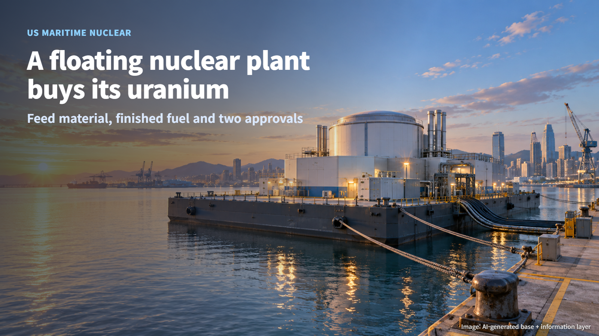
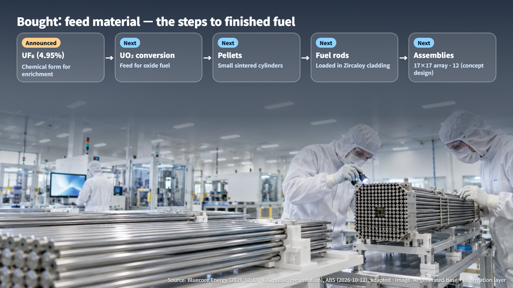
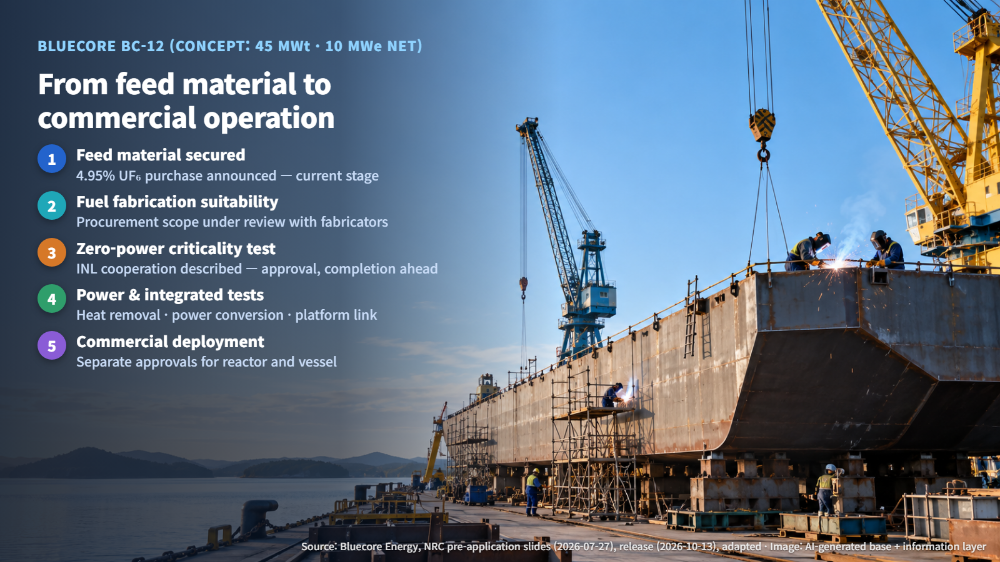
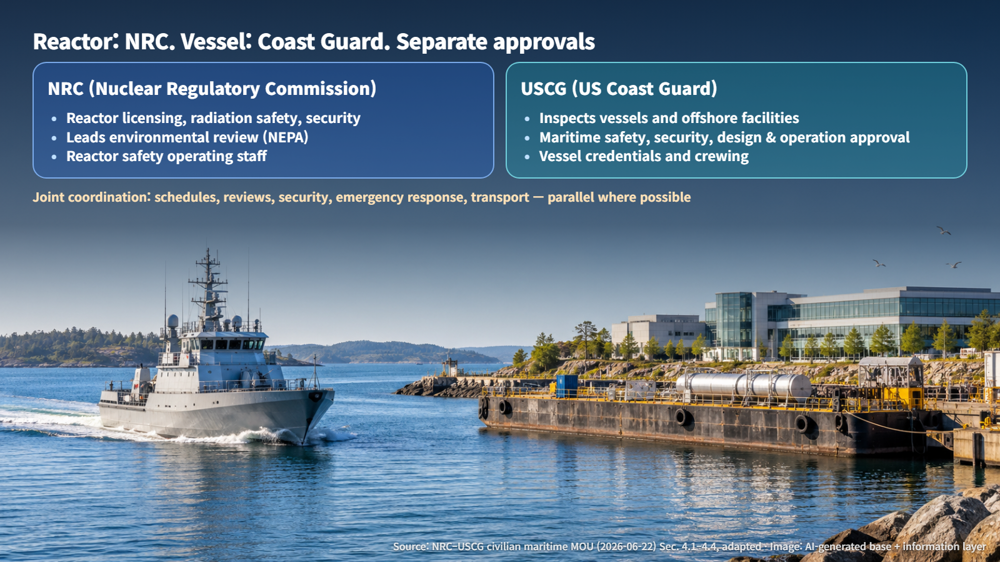

United States · Maritime Nuclear
A Floating Nuclear Plant Buys Its Uranium: What That Purchase Really Covers
Bluecore Energy has bought 4.95% enriched UF6 for its floating BC-12 reactor; fuel fabrication, staged testing and separate NRC and Coast Guard approvals come next.
First came the news that nuclear plants could be placed on ships. Now there is an announcement that fuel has been bought. It is natural to wonder whether a reactor at sea is about to start up. On October 13, the US maritime nuclear developer Bluecore Energy announced a purchase of low-enriched uranium. A day earlier, on October 12, the American Bureau of Shipping (ABS, the organization that reviews design and construction standards for ships) announced maritime nuclear cooperation with the US Department of Energy (DOE). The purchase is a meaningful step on a longer road. Let's look at what has been settled so far and which steps still lie ahead.

Bought: Feed Material. Needed: Finished Fuel
What Bluecore bought is uranium hexafluoride (UF6) enriched to 4.95%. Enrichment is the share of uranium-235, the isotope that splits most readily. UF6 is the chemical form used in the enrichment process, and it is an intermediate product on the way to reactor fuel. To make oxide fuel, it has to be converted into uranium dioxide (UO2), pressed into small cylindrical pellets, loaded into fuel rods, and the rods bundled into finished fuel assemblies.
Think of it this way: buying flour is the first step toward baking bread. According to the company, the material was purchased from a fuel market intermediary and is stored at a US fuel facility outside California. The quantity, the price and any contract for delivery of finished fuel assemblies have not been disclosed, and the Long Beach headquarters operates no reactor and stores no nuclear fuel. Buying the feed material lowers part of the risk of securing enriched material; fuel fabrication, inspection and approval to load a reactor are the steps that follow.

The BC-12 Barge Reactor: A Concept Design
So which reactor is this material meant for? A Bluecore presentation made public by the US Nuclear Regulatory Commission (NRC) names the BC-12 pressurized water reactor as the reactor for its Nautilus Floating Nuclear Power Plant project. A pressurized water reactor keeps its water under high pressure so that it does not boil while carrying heat away; it is the most widely used reactor type. According to the presentation, the BC-12 is a concept with 45 MWt of thermal output, 15 MWe gross and 10 MWe net electrical output, mounted on a barge (a flat-bottomed vessel without its own propulsion that is towed into place).
The fuel is described as 4.95% low-enriched UO2 with Zircaloy (zirconium alloy) cladding, in a 17×17 array, with 12 assemblies. These figures belong to the developer's concept design; licensing and demonstration come next. Matching the 4.95% enrichment of the purchased material is one piece of the picture. Fuel rod dimensions, cladding and assembly support structures must agree with the core analysis, and fabrication records must connect seamlessly with transport and handling conditions. Material becomes usable fuel once it carries evidence that it was made exactly to the design.
Each Test Proves Something Different
The path from feed material to commercial operation runs roughly through five stages: securing feed material, confirming fuel fabrication suitability, zero-power criticality testing, power and integrated performance testing, and commercial deployment and operation. Public records currently confirm the first stage, the purchase announcement. On fuel fabrication, the company is at the point of reviewing procurement scope with fabricators.
Zero-power criticality testing runs a reactor at very low power to confirm the state in which the fission chain reaction sustains itself (criticality) and how it behaves. Bluecore's materials describe zero-power testing cooperation with Idaho National Laboratory (INL); approval and completion of that testing are still ahead. Just as important, heat removal at the design's rated power and long-term operating performance are confirmed in the later power tests. It is like confirming that an engine starts before proving that the car can cruise on the highway for hours.

Next, power and integrated performance testing must separately demonstrate heat removal, power conversion and the connection to the platform. The ocean adds its own homework: hull motion, flooding and damage, mooring and port accidents, and the connection that sends power ashore can all affect the design.
The NRC Licenses the Reactor, the Coast Guard Approves the Vessel
The last question is who gives the approvals. A memorandum of understanding between the NRC and the US Coast Guard (USCG), with final signature on June 22, 2026, covers civilian projects in which a reactor licensed under the Atomic Energy Act is installed on a vessel or offshore facility under USCG jurisdiction, and it replaces a 1973 agreement. The NRC is responsible for reactor licensing, radiation safety and security; the USCG handles inspection of vessels and offshore facilities, maritime safety and security, and design and operational approval.
The two agencies coordinate schedules, technical reviews, security, emergency response and transport, and they aim to run reviews in parallel where possible to reduce duplicate submissions. Each agency keeps its own independent authority, so a project receives two separate approvals. Picture one shared schedule, two separate stamps. Bluecore said it began pre-application engagement with the NRC in August, with the USCG taking part; full licensing comes after this stage.

The ABS–DOE cooperation is best read in the same light. It centers on concept and feasibility studies covering floating nuclear plants, nuclear-powered ships, and port and shipyard infrastructure, along with joint operation of the Maritime Nuclear Applications Group (MNAG); ABS coordinates the work as secretariat for the Maritime Administration (MARAD) Maritime Innovation Center. The announcement itself names no test approval or funding for the Bluecore project. The Approval in Principle (AIP) that ABS granted in June is a concept-stage technical review, with operating licences to be sought later, and the application to the DOE National Reactor Innovation Center (NRIC) Launch Pad for a Long Beach demonstration remains an application on record.
The fuel feed purchase signals that the floating nuclear plant has moved one step from drawings toward real material. For that material to become fuel, pass each stage of testing, and receive approval from both agencies, much remains to be demonstrated. When similar news appears, asking "which stage is this at right now?" first is the surest way to keep both inflated expectations and vague worries in proportion.